Welkom op mijn persoonlijke pagina!
Hoi! Ik ben Denise, en ik ben blij dat je hier bent! Deze pagina is een kleine kijk in mijn leven, mijn interesses en mijn passie.
Of je nu nieuwsgierig bent naar mijn hobby's, mijn ervaringen, of gewoon wat meer wilt weten over wie ik ben, je vindt hier alles wat je zoekt.
Neem gerust de tijd om rond te kijken. Als je vragen hebt of gewoon hallo wilt zeggen, aarzel niet om contact met me op te nemen!
Geniet van je bezoek!
 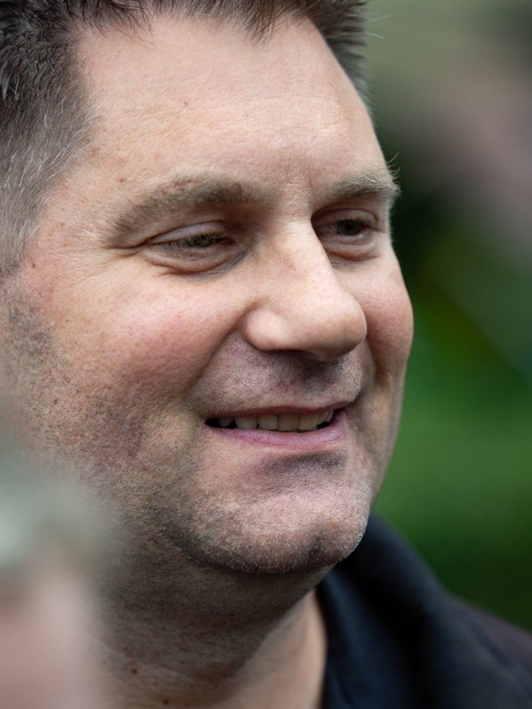
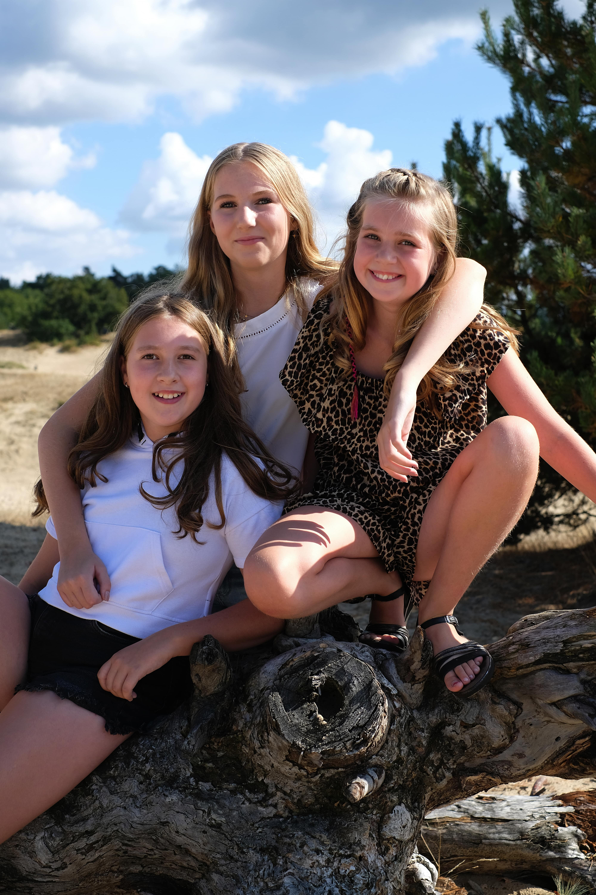
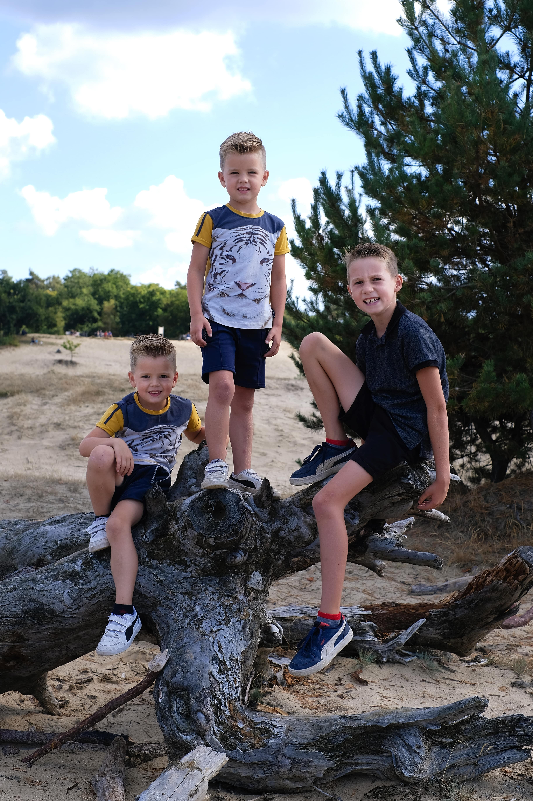
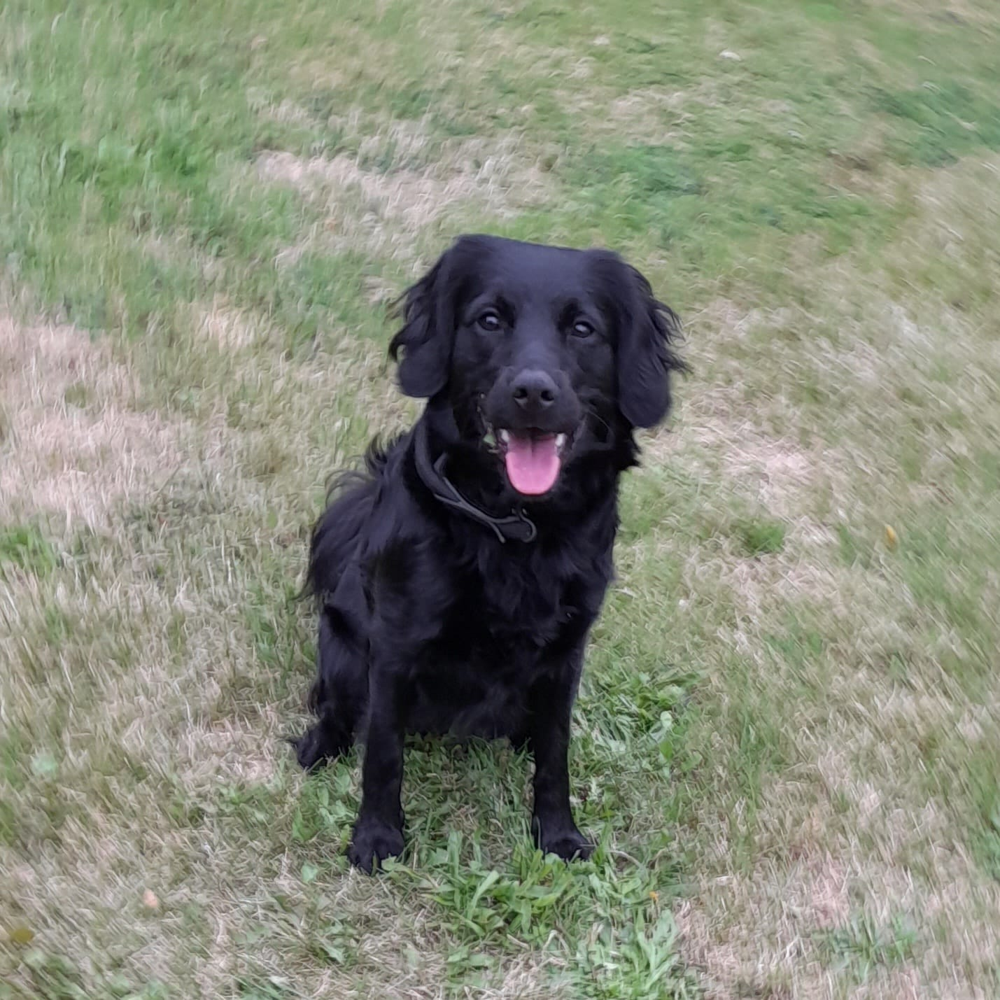
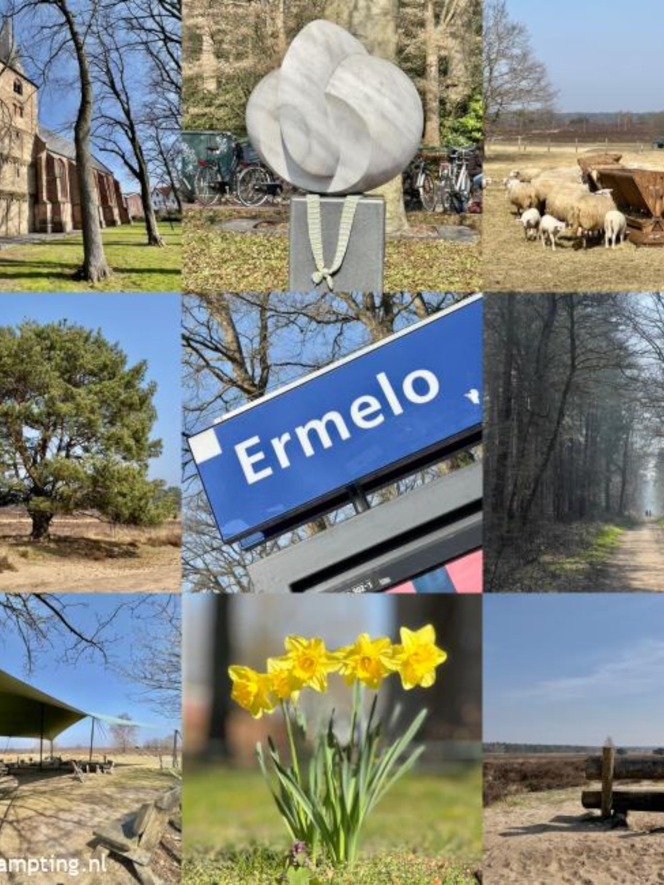
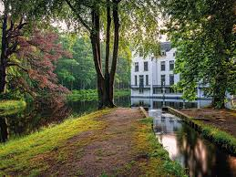
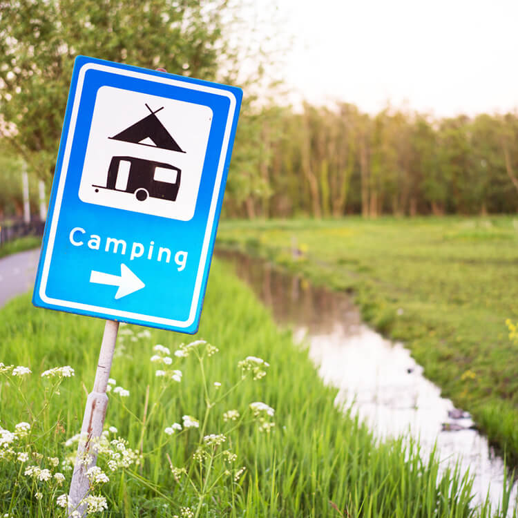
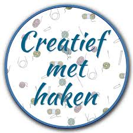
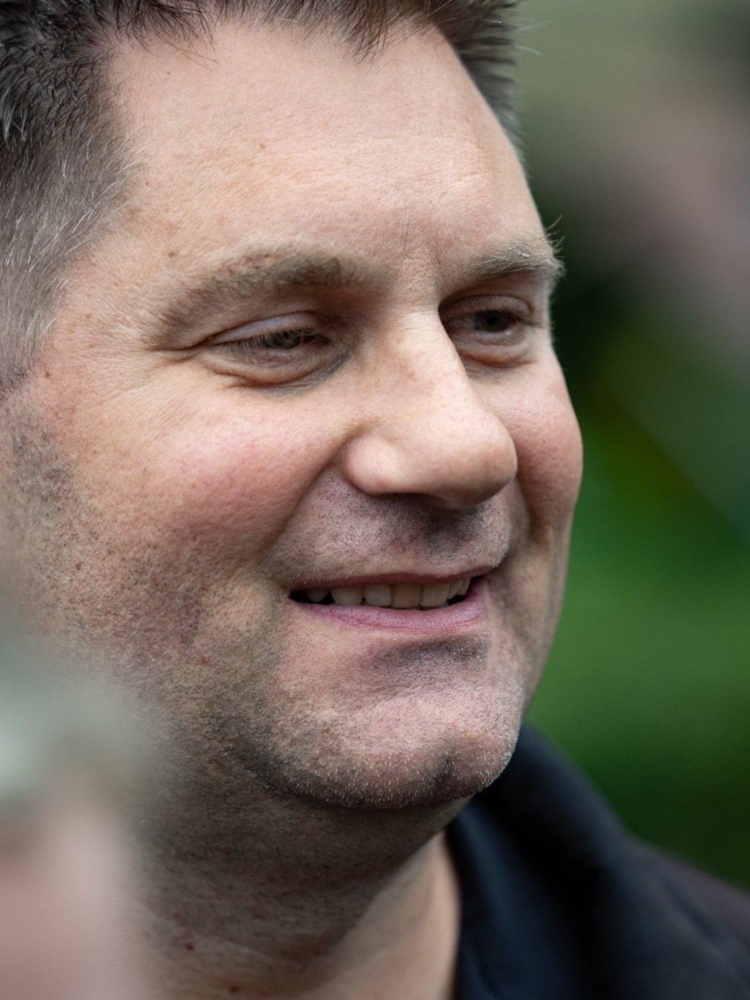
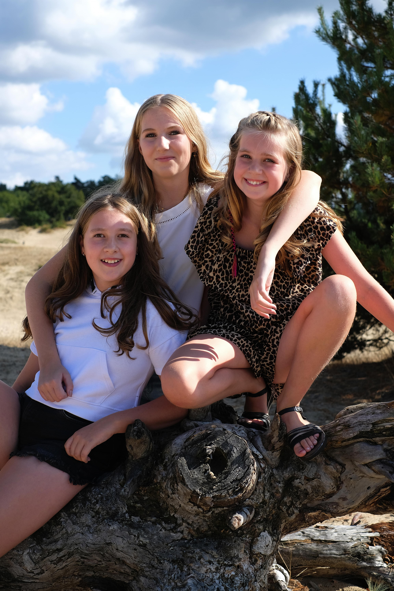
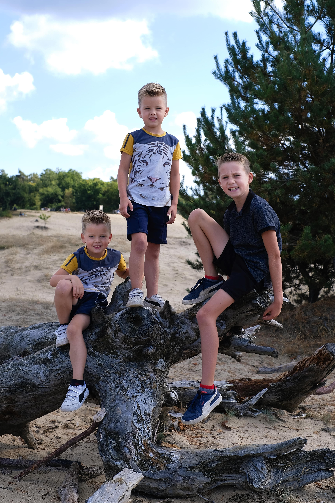
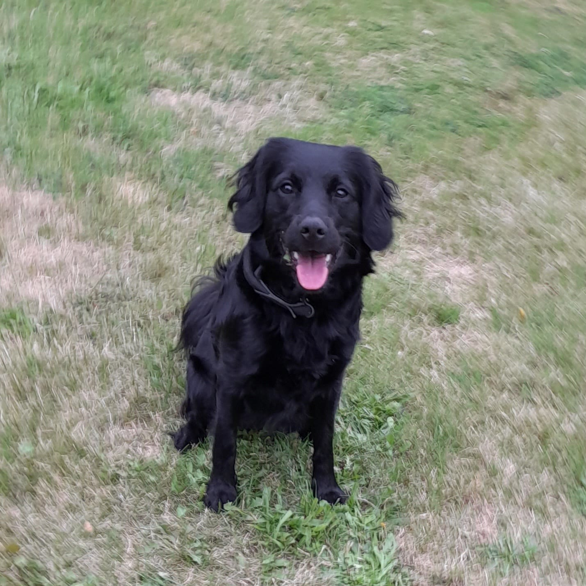
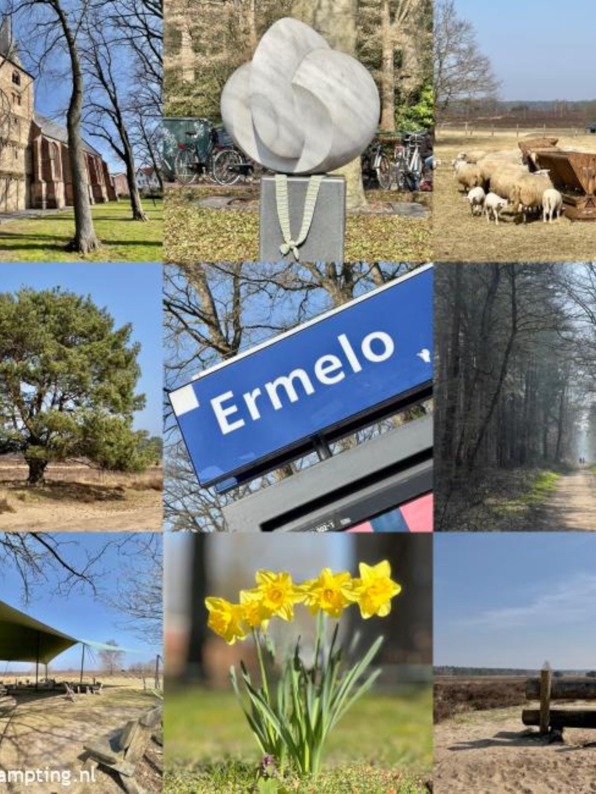
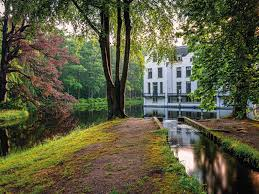
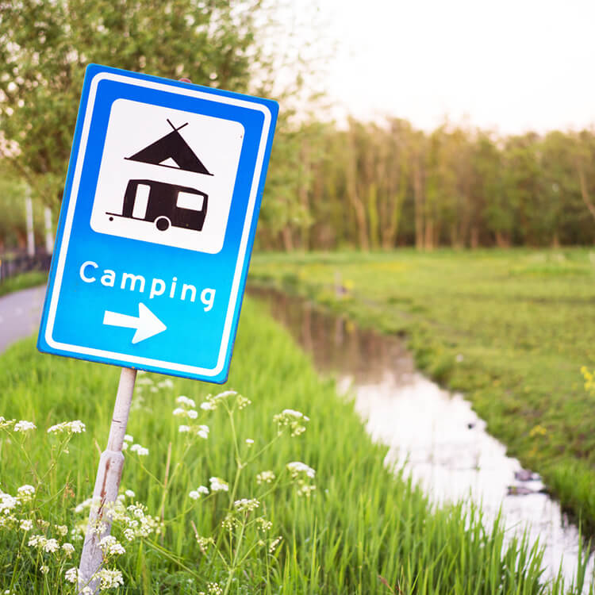
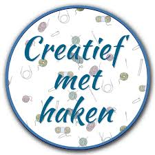